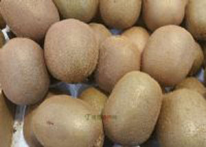

“猕猴桃”，又名杨桃、仙桃、藤梨、芝麻桃等。武宁县年产约140万斤左右。猕猴桃含有丰富的维生素C，比柑桔高三到十倍，比梨和苹果高三十倍左右，同时含有有多种氨基酸和微量元素，是目前世界上唯一没有受到污染的水果。据医学临床试验，猕猴桃具有：滋补强身，清热利尿，生津润燥，祛风活血，散於消肿和健胃，催奶，止血等多种功效。
1987年，国家正式将猕猴桃列入《中国药典》。 武宁县各厂家向中外市场投放了猕猴桃酱、罐头、果脯、果晶、果汁、果酒等系列产品。